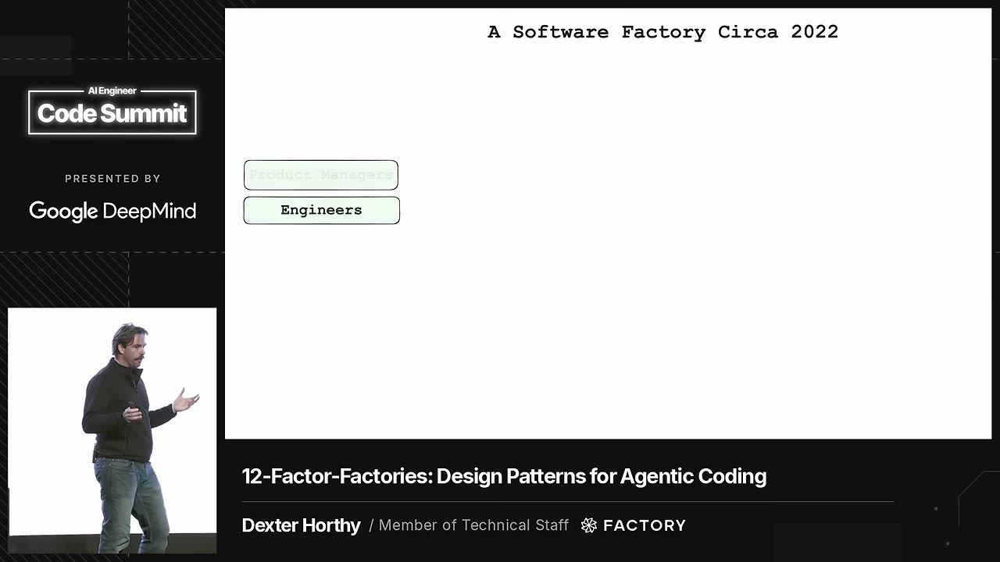
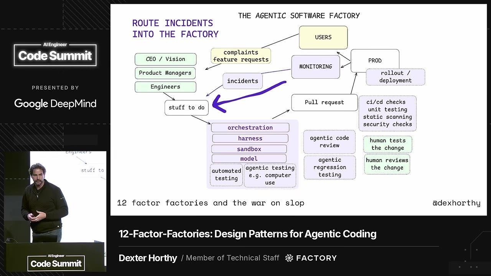
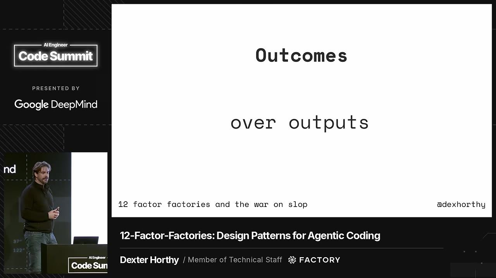

essencial do dia: Dá um modelo reutilizável para montar a fábrica com agentes: automatizar a entrada de trabalho e reforçar as checagens antes da revisão humana.
12 práticas para uma fábrica de software sem slop
12 Rules for a Software Factory That Doesn't Ship Slop
Fábrica de software com agentes é boa engenharia de sempre: empurre trabalho para dentro, segure a qualidade com checagens e mantenha um humano revisando.
Depois deste talk você consegue desenhar uma fábrica de software com agentes que combine pressão de entrada, contrapressão de qualidade e revisão humana
Em 3 frases
Dex Horthy argumenta que uma software factory é o processo clássico (tracker, testes, CI, revisão, canary, monitoramento) em que um agente faz a construção, e que o ganho vem de acelerar a entrada de trabalho e de reforçar as checagens de saída.
Ele apresenta dados do Slop Code Bench, em que o melhor modelo chega a cerca de 16%, e dá 12 práticas, entre elas planejar antes de construir, alinhar de forma visual, usar regras de lint contra slop, feature flags e uma forja unificada.
No fim, lança o Anti-Slop Manifesto, que defende que revisar continua importante porque produzir é quase de graça e entender continua caro.
Antes de ler
- Software factory fábrica de software analogia no glossário
- Forward pressure pressão de entrada: o que faz o trabalho começar sozinho
- Back pressure Contrapressão: recusar carga acima do limite analogia no glossário
- Slop trabalho que parece pronto, sem raciocínio por trás analogia no glossário
- Benchmark teste padronizado de desempenho analogia no glossário
- Complexidade ciclomática cyclomatic complexity analogia no glossário
A fábrica antiga já existia
O fluxo clássico tem tracker, build, testes, pull request, CI com linters, canary, feature flags e monitoramento às 3 da manhã. Para torná-lo agêntico, basta trocar 'uma pessoa constrói' por 'um agente constrói'. Por isso Horthy trata a fábrica de software como a boa engenharia de sempre aplicada a agentes.


(ampliar imagem)Pressão de entrada e contrapressão
Forward pressure é tudo que faz trabalho começar sozinho, como pedidos de feature e incidentes roteados para a fábrica. Back pressure é o que segura a qualidade quando construir fica barato: revisão e teste por agentes, CI e linters. O objetivo é que o agente melhore o resultado sozinho, antes de um humano tocar.


(ampliar imagem)Modelos não mantêm código sozinhos
O Slop Code Bench pede ao modelo que evolua uma base de código em checkpoints, como no trabalho real. O melhor resultado fica perto de 16%. As métricas incluem complexidade ciclomática e 200 regras de lint, e o autor vê padrões ruins crescendo em modelos novos.
07:25 O benchmark mede como a base de código evolui ao longo de vários checkpoints.
Mais 2 ideias deste talk
Regras de lint contra slop
Existem repositórios com cerca de 100 regras para impedir agentes de produzir slop em TypeScript, e é possível extrair as regras de qualidade Python do Slop Code Bench. O princípio vale para qualquer linguagem: transforme o que você considera slop em checagem automática que o agente roda.
11:35 Regras de lint viram contrapressão automática sobre o código do agente.
O manifesto: slop é assimétrico
Slop é entregar algo que custou menos esforço para produzir do que custa para entender. Gerar um PR de mil linhas custa quase zero, revisar continua custando o mesmo. Por isso o manifesto pede que cada pessoa assuma a intenção, o gosto e as consequências do que envia.


(ampliar imagem)Horthy acabou de entrar na Factory e apresenta o produto e o manifesto no mesmo talk, o que é conflito de interesse leve. O benchmark é novo, de um laboratório parceiro dele, e o talk mostra poucos números. Afirmações como 'a escrita em Python 2 voltou' e 'o slop cresce com o tempo' não trazem dado na fala. O ganho de planejar antes (50% contra 10% de retrabalho) vem de intuição, sem medição.
Teste você mesmo
Responda de cabeça antes de abrir. Lembrar com esforço é o que fixa.
- lembrar Qual a diferença entre forward pressure e back pressure numa fábrica de software com agentes?
Ver resposta
Forward pressure é o que faz o trabalho começar sozinho, como pedidos e incidentes roteados para o agente. Back pressure é a checagem automática (revisão e teste por agentes, CI, linters) que sobe a qualidade antes de um humano revisar.
- aplicar No seu repositório, que três regras de lint você criaria para barrar slop de agentes?
Ver resposta
Resposta pessoal. Um bom caminho é olhar PRs recentes de agentes, listar padrões repetidos (funções muito complexas, comentários redundantes, estilo antigo de formatação) e transformar cada um em regra que roda no CI e no loop do agente.
- criticar Que limites existem na evidência do talk, dado que o palestrante acabou de entrar na Factory?
Ver resposta
O benchmark é novo e de laboratório parceiro, os números são poucos e o ganho de planejar é intuição. O palestrante também promove o produto da Factory e o manifesto, então vale buscar replicação independente.
Crie uma regra anti-slop e meça o efeito
Você precisa de: Um repositório seu, um linter da sua linguagem e Claude Code ou outro agente de código
- Peça ao agente uma pequena feature no repositório e salve o diff.
- Leia o diff e anote três padrões de slop, como função longa, comentário inútil ou código duplicado.
- Transforme cada padrão em regra do linter ou em teste e rode no repositório.
- Peça a mesma feature de novo, dessa vez mandando o agente rodar o linter até passar.
- Compare os dois diffs e conte quantas violações cada um teve.
Deu certo se: A segunda execução tem menos violações das suas regras, sem que você tenha corrigido nada à mão.
O que fazer com isso
- Liste as etapas do seu fluxo de entrega e marque quais já têm forward pressure (trabalho começa sozinho) e quais têm back pressure (checagem automática antes do humano).
- Escolha três padrões de slop que você vê no código de agentes e transforme cada um em regra de lint ou teste que o agente rode antes de abrir o PR.
- Antes da próxima tarefa de agente, estime a dor esperada (chance de mudar depois vezes custo de mudar) e decida se vale planejar ou só tentar.
Conversa com outros talks
- complementa Engenharia de fábricas de agentes de código · Zach Lloyd descreve a fábrica como circuito fechado medido em código; Horthy acrescenta a contrapressão de qualidade, com lint anti-slop e revisão humana.
- complementa Oficina antes da fábrica: usar agentes de código com critério · Os dois lembram que gerar código ficou barato e entender continua caro, e por isso pedem qualidade antes de volume.
- Como tornar um codebase seguro para agentes de código · 15 nov · em comum: Linter, Slop, Software factory
- Transformar correções repetidas em lint rules · 9 out · em comum: Complexidade ciclomática, Linter
- Por que agentes de código entregam o produto mediano · 16 out · em comum: Benchmark, Slop